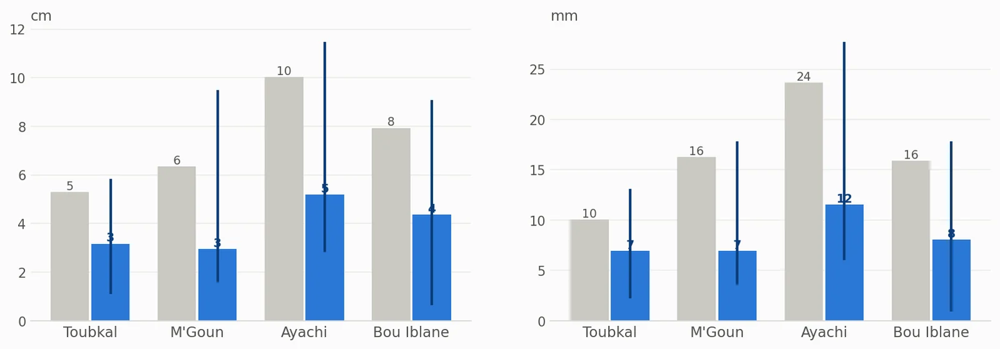

Neige de l'Atlas en janvier 2027 : un mois doux, bien moins d'eau dans la neige
Un janvier chaud s'annonce sur les montagnes du Maroc. La prévision saisonnière pointe des températures 2 °C au-dessus de la normale et des pluies proches de la normale, ce qui favorise la pluie sur la neige aux étages moyens. Avec 45 hivers passés en référence, les perspectives représentent environ un tiers de l'eau de neige d'un janvier typique : environ 69 millions m³ au lieu de 206.
Consultez les prévisions neige en temps réel pour Atlas sur l'application SnowScopeHauteurs de neige, alertes poudreuse et carte 3D, gratuitement.
Où les chances de neige s'affaiblissent
La carte SnowScope divise l'Atlas en zones d'environ 10 km et compare chacune avec son historique de janvier. Tous les hauts plateaux qui retiennent habituellement la neige ce mois-ci s'orientent vers un régime plus sec. La probabilité que chaque zone connaisse une neige plus abondante que d'habitude varie de 24 % à 35 %, avec une valeur typique autour de 28 %. Aucune zone ne penche vers un mois plus enneigé.
Le schéma est cohérent d'ouest en est : Toubkal dans le Haut Atlas occidental, M'Goun au centre, Ayachi à l'est, et Bou Iblane dans le Moyen Atlas montrent tous la même tendance.
Température et pluie : quand le froid compte
Les précipitations restent proches de la normale, variant de 5 % en dessous à 1 % au-dessus selon les zones.
Dans l'Atlas, quelques degrés décalent la limite entre neige et pluie. Cette limite se situe entre 2000 et 2500 m d'altitude. Quand janvier est aussi chaud, les tempêtes apportent toujours de l'eau, mais aux étages moyens et bas elle tombe sous forme de pluie, non de neige. Seules les crêtes les plus hautes et les versants nord au-dessus de 2500 m conservent la neige plus longtemps.


Ce que les grands massifs attendu
Au sommet (au-dessus de 2500 m, ou 2300 m sur Bou Iblane), la profondeur moyenne de neige en janvier est habituellement 5 cm sur Toubkal, 6 cm sur M'Goun, 10 cm près d'Ayachi et 8 cm sur Bou Iblane. Ce sont des moyennes de bassin—les versants sud ensoleillés fondent vite, tandis que les versants nord restent plus épais. Les perspectives réduisent cela de moitié environ : à 3, 3, 5 et 4 cm.
L'équivalent en eau de neige (l'eau libérée par la fonte ; 1 mm équivaut à 1 litre par mètre carré) raconte l'histoire plus sèche. Un janvier typique retient 10 mm sur Toubkal, 16 mm sur M'Goun, 24 mm près d'Ayachi et 16 mm sur Bou Iblane. La prévision réduit cela à 7, 7, 12 et 8 mm. La fraction de terrain élevé qui retient une neige quelconque baisse fortement : M'Goun de 69 % à 41 %, Ayachi de 77 % à 60 %.

L'eau de montagne pour les vallées en dessous
La neige stocke l'eau pour les fleuves et barrages qui alimentent les plaines au printemps. Additionnée sur toutes les montagnes du Maroc, un janvier normal retient 206 millions m³ d'eau gelée dans le manteau neigeux. Cette prévision en attend 69 millions m³, une fourchette la plus probable entre 31 et 235, avec seulement 31 % de chances de dépasser le total habituel.
Le bassin de l'Oum Er-Rbia, qui draine le Haut Atlas central et oriental, retient habituellement 96 millions m³ en janvier ; les perspectives sont 30. La Moulouya (habituellement 36, perspectives 12), la Draa (habituellement 26, perspectives 11), le Sebou (habituellement 15, perspectives 5) et la Tensift (habituellement 14, perspectives 7) penchent tous vers le sec. Cette neige de janvier fondra au printemps ; à moins que février et mars n'apportent une neige plus abondante, les fleuves charieront moins d'eau de fonte vers les réservoirs.


Leçons des hivers similaires
Les janvier passés dont la météo ressemblait le plus à cette prévision sont 2016, 2024 et 1998. En les comparant, nous voyons qu'une neige plus maigre se produit certaines années chaudes, mais ce n'est pas certain—une forte tempête atlantique peut encore déverser de la neige sur les hauts cols.
Une prévision saisonnière modifie les probabilités au cours du mois, elle ne verrouille pas un seul résultat. Pour les décisions concernant le ski, l'approvisionnement en eau ou les déplacements en neige, consultez la prévision 7 jours à mesure que janvier se déploie et après les tempêtes.
Conseils aux skieurs
- Planifiez les séjours de ski au haut Atlas pour mi-janvier ou fin janvier, après les tempêtes atlantiques, plutôt qu'au début du mois.
- Visez les sommets et les versants nord à 2500 m et plus : ceux-ci retiennent la neige le plus longtemps un mois chaud.
- Consultez la carte SnowScope chaque jour en janvier pour suivre la ligne de neige à mesure qu'elle se déplace après chaque tempête ; évitez le sol nu.
- Pour les gestionnaires de ressources en eau : un janvier maigre signifie que l'écoulement printanier dépendra davantage de la météo de février–mars. Suivez la saison hivernale complète, pas seulement ce mois.
- Si la prévision 7 jours montre un coup de froid ou une tempête qui s'annonce, c'est votre signal d'attendre de la neige fraîche ; les périodes chaudes signifient de la pluie même en haute altitude.
À propos de ces chiffres
Les hauteurs de neige des stations sont la neige la plus épaisse sur le haut du domaine à la date indiquée ; ce sont des estimations pour une zone, pas une mesure en un point. Les prévisions peuvent changer. Consultez toujours le bulletin d'avalanche officiel avant le hors-piste.
Citer ce bulletin
Pour la recherche, l'enseignement ou la presse : chiffres et graphiques réutilisables librement sous CC BY 4.0 avec cette citation.
SnowScope (2026), Neige de l'Atlas en janvier 2027 : un mois doux, bien moins d'eau dans la neige, https://snowscope.app/blog/fr/2026/11/atlas-january-2027-snow-outlook.html, consulté le 2026-11-10
SnowScope (Atlas Labs). (2026, November 10). Neige de l'Atlas en janvier 2027 : un mois doux, bien moins d'eau dans la neige. SnowScope snow reports. https://snowscope.app/blog/fr/2026/11/atlas-january-2027-snow-outlook.html
BibTeX
@misc{snowscope2026atlasjanuary2027snowoutl,
author = {{SnowScope (Atlas Labs)}},
title = {Neige de l'Atlas en janvier 2027 : un mois doux, bien moins d'eau dans la neige},
year = {2026},
month = nov,
howpublished = {\url{https://snowscope.app/blog/fr/2026/11/atlas-january-2027-snow-outlook.html}},
note = {Published 2026-11-10 10:59 UTC; accessed 2026-11-10}
}· CC BY 4.0 · Méthodes, données et outils →
Suivre Atlas
Gratuit : un message quand la neige arrive, et la météo chaque matin.
Autres bulletins neige

Environ 65 mm sur le Toubkal d'ici le 12 novembre, mais l'isotherme 0 °C reste vers 4 000 m : pluie à Oukaïmeden et dans les vallées, neige au sommet seulement.

Les stations de ski de l'Atlas n'ont pas de neige sur leurs pentes aujourd'hui. SnowScope n'en trouve que sur les plus hauts sommets : …
Depuis le 9 novembre, la neige est passée de 40 km² à 20 km² aujourd'hui ; pour le 14 novembre, notre prévision donne 10 km². Aujourd'hui, les pistes …